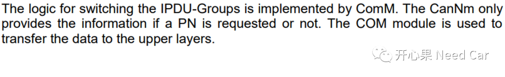
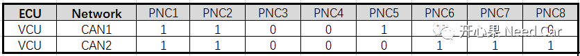
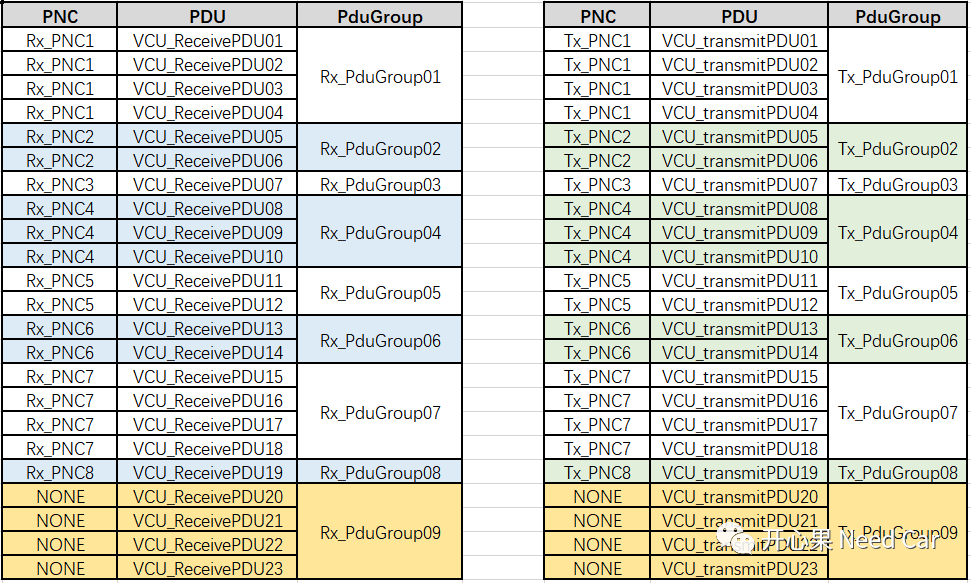
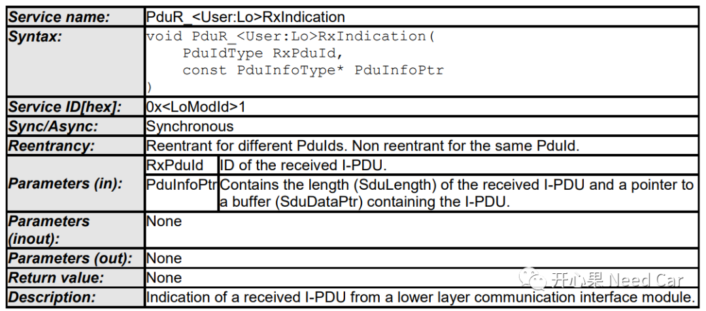
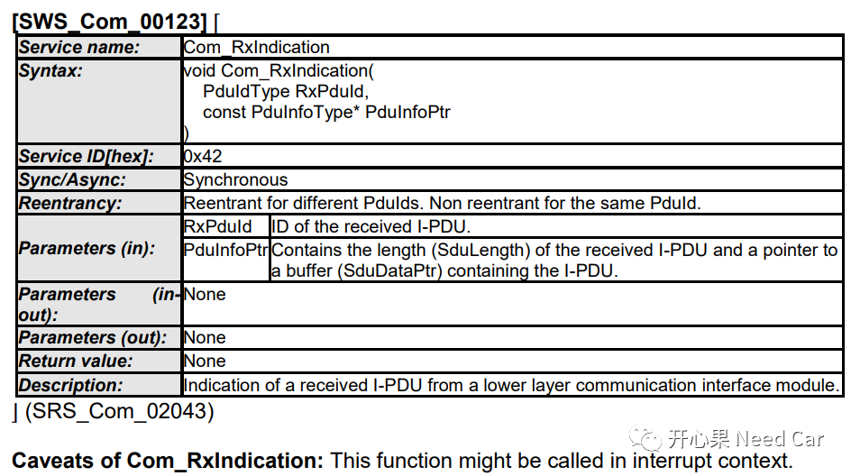
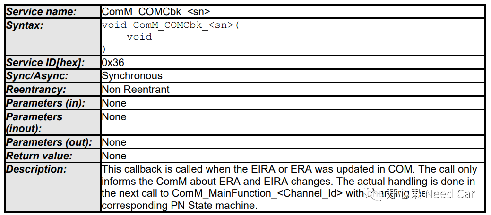
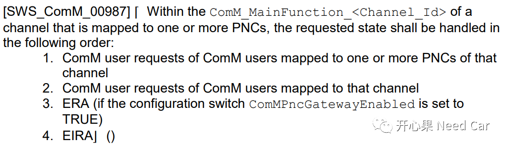
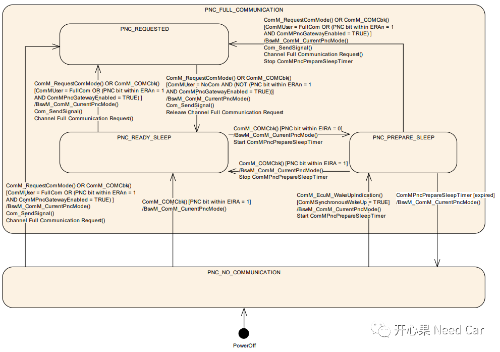
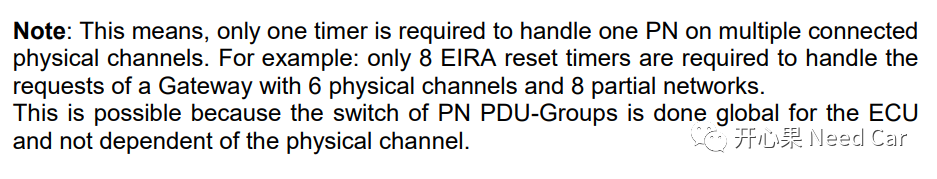
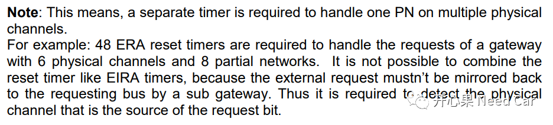

开心果 Need Car · 2022-03-25T18:09:00+08:00 · 微信原文
前面就Autosar的PN（Partial Networking）功能聊过，可以回顾Autosar网络管理：从CanNM模块看Partial Networking和Autosar网络管理：从ComM模块看Partial Networking，由于篇幅限制，还是有些东西没有聊透，本文接着聊，把自己对PN的理解，再给大家分享一下。
想弄清楚PN功能，要先清楚CanNm、COM、ComM三者之间的关系，Autosar CanNm模块有一段描述将三者的关系表达得很清晰，如下所示：

CanNm负责提供PN请求信息，也就是将User Data部分的PNC信息缓存；COM模块负责将CanNm中缓存的PNC信息传递给ComM；ComM通过COM模块的标准接口将PNC信息进行拆解，并执行PNC状态机的管理，PNC状态机的管控最终会作用到COM的IPDU-Groups，而COM IPDU-Groups的使能/禁用，由BswM的仲裁结果决定，仲裁信息来自ComM对PNC Mode的切换。
PNC与物理通道的关系
进一步的讨论PN功能之前，我们先做一个需求假设，如：VCU包含两路CAN（CAN1、CAN2），有8个PNC（PNC1~PNC8），每个PNC与CAN1、CAN2的关联关系如下所示：

举例说明：
PNC1与CAN1、CAN2均关联，CAN1收到PNC1 Bit = 1时，CAN1网络需要唤醒，且将此信息路由给CAN2，CAN2的网络需要唤醒；
PNC3与CAN1、CAN2均不相关，收到的PNC3 Bit = 0/1，CAN1网络不会唤醒，也不会路由给CAN2；
PNC5与CAN1相关，与CAN2不相关，收到的PNC5 bit = 1，激活CAN1网络，CAN2网络不激活。
注意：假设CAN1和CAN2都是默认的ACTIVE网关类型。
实际的开发中，我们会有这样的表述“PNC1关联Pdu01，或者PNC1不关联Pdu02”，这什么意思呢？我们以实际的例子分析，如下所示：

假设当前VCU的CAN1发送23帧应用报文。发送的应用报文分为两类，一类与PNC关联，一类与PNC不关联，上图中，PNC = NONE表示此应用报文与PNC不关联。与PNC关联的应用报文会根据PNC ID划分不同的Pdu Group。这样做的目的是什么呢？主要是为了便于管理应用报文，这里分两种情况讨论：
1、非PNC关联的应用报文
2、PNC关联的应用报文
节点收到网络管理报文，当某些应用报文与PNC相关时，如：Tx_PduGroup01对应的应用报文均与Tx_PNC1关联。这些应用报文的发送状态与ComM模块控制的PN状态机有关。即：收到的网络管理报文，Tx_PNC1 bit = 1，Tx_PduGroup01/Tx_PduGroup09对应的应用报文需要外发，如果Tx_PNC1 bit = 0 AND Tx_PNC1_Timeout，则停发Tx_PduGroup01/Tx_PduGroup09对应的应用报文。
这里可以这样理解：每个PNC对应一组PDU(PduGroup，至少一个PDU)，每一个PNC对应一个PN状态机，每个PNC状态机只管控关联的PduGroup行为。
1、PNC信息交互过程


CanNm向上传递数据的时候，Node ID和CBV两个字节对上层（COM）来说没有意义，只传输User Data部分数据即可。
注意：此接口属于一个配置接口。
所以，对于多物理通道，即：CAN1和CAN2，在COM层需要配置3个接收信号：CAN1_Rx_ERA_Signal、CAN2_Rx_ERA_Signal和CAN_Rx_EIRA_Signal；在COM层需要配置2个发送信号：CAN1_Tx_EIRA_Signal、CAN2_Tx_EIRA_Signal。这些信号主要为ComM所用，实现路由（Gateway）功能。



提示：
信号级别的路由在COM，PDU级别的路由在PduR。ERA和EIRA在CanNm、PduR、COM都可以看作是PDU。同时，在COM，ERA和EIRA还可以看作Signal，即接收到ERA PDU和EIRA PDU不进行拆分，当作ERA Signal和EIRA Signal处理；
PNC状态控制的目的是控制关联PDU的收/发行为；
每次PNC状态切换时，均会通过BswM_ComM_CurrentPncMode()接口通知BswM，以便BswM进行模式仲裁，根据仲裁结果决定是否使能/禁用对应PNC的PDU行为。
2、Timer与物理通道的关系
在阅读Autosar CanNm模块的时候，大家是否对Timer与物理通道、PNC关系产生过困惑？老实说，我开始没有太理解。
对于EIRA，一个PNC关联多个物理通道时，一个Timer即可，说明如下：


这里提到的Timer，就是开发中需要配置的CanNmPnResetTime，如果网络管理报文的超时间是（CanNmTimeoutTime）3s，一般会要求CanNmPnResetTime<CanNmTimeoutTime，比如CanNmPnResetTime = 2.95s，同时CanNmPnResetTime > CanNmMsgCycleTime(如：1s)。
当CanNmPnResetTime = 0时，对应的PNC bit = 0。
（1）项目开发中需要注意CanNm模块的主函数CanNm_MainFunction()所在Task周期不要超过节点的快发周期。为什么呢？使用PN功能时，每个PNC会对应一个CanNmPnResetTime，而PNC关联的外发PDU行为与CanNmPnResetTime有关，CanNmPnResetTime = 0时，PNC关联的外发PDU停发。而CanNmPnResetTime的复位（重新赋值，如：CanNmPnResetTime = 2.95s）与收/发网网络管理报文的时机有关；
Case1：假设ECU A的CanNm_MainFunction()周期20ms，ECU B的网络管理报文快发周期10ms，ECU A和ECU B在同一个网段（均只有一路CAN），且PNC_AB关联ECU A和ECU B，当ECU A收到网络管理报文PNC_AB = 1时，ECU A对应CanNmPnResetTime_A复位，即CanNmPnResetTime_A= 2.95，需要ECU A的PN激活。假设：ECU B在网络的快发模式，以10ms周期发送网络管理报文，且PNC_AB = 0，则ECU A的PNC_AB被覆盖，即ECU A收到的PNC_AB = 0，CanNmPnResetTime_A= 0，导致ECU A的PN网络未激活（实际需要激活），与PNC_AB关联的外发PDU不能外发。因此，开发中需要注意此细节。
如何避免此问题的发生？确保CanNm_MainFunction()周期小于网络管理报文快发周期，比如：CanNm_MainFunction() = 5ms，网络管理报文的快发周期 = 20ms。
（2）与PNC关联的PDU可以是周期型应用报文，也可以是事件型应用报文。
（3）当某个PDU关联到某个PDU group，并且此PDU group的控制条件为某个PNC，则包含此PDU的发送报文被认为关联到此PNC，即当接收或者发送此PNC时，该网段应该发送此报文。
（4）当某个PDU没有关联到任何PDU group，则包含此PDU的发送报文应该在任意PNC下都能发送。
参考资料
AUTOSAR_SWS_CANNetworkManagement.pdf
AUTOSAR_SWS_PDURouter.pdf
AUTOSAR_SWS_COMManager.pdf
写在最后
文中有表述不清或者错误的点，还望读者能给指正，本人目的是想把此部分的知识分享给需要的读者，但是一家之言，未必能说清楚所有的细节，见谅，如果觉得有用请分享给更多的朋友，大家一起聊聊Autosar。
往期精彩回顾